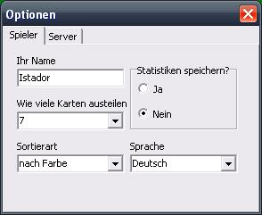

Spieler-Optionen
Um zu den Spieler-Optionen zu gelangen, wählen Sie im Hauptmenü Programm -> Optionen... oder drücken Sie F6 auf Ihrer Tastatur.

Ihr Name
In dieses Eingabefeld können Sie einen Namen eingeben, der anderen Spielern angezeigt wird.
Wie viele Karten austeilen
Dies ist die Standardantwort, die eingegeben wird, falls Sie gefragt werden, wie viele Karten jeder Spieler erhalten soll.
Sortierart
Diese Einstellung sortiert die für Sie sichtbaren Karten auf Ihrer Hand, entweder gar nicht, nach Farbe oder nach Wert der Karten.
Statistiken speichern?
Mit der Auswahl von Ja werden Statistiken gespeichert. Mit Auswahl von Nein werden Statistiken nicht gespeichert und bereits gespeicherte Statistiken gelöscht.
Sprache
Hier können Sie zwischen verschiedenen Sprachen für die Programmoberfläche wählen.
Das Ändern dieser Option beeinflusst nicht bereits ausgegebene Nachrichten im Chat.